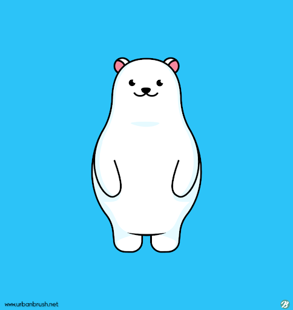

Youtube
#Ireland
#Waterfall
#LandScape
아일랜드 하면 가장 떠오르는 것이 무엇일까? 아마 문학과 아름다운 풍경이 떠오를 것이다. 하지만 막상 여행을 하게되면 더블린의 작가박물관을 제외하고는 아일랜드 문학을 접할수 있는 방법이 마땅치가 않다. 그렇다고 아일랜드에 실망할 필요가 없다. 우리에게는 그런 실망들이 생각도 안날만큼 아름다운 풍경들이 존재하기 때문이다. 아름다운 아일랜드 폭포를 감상해보자
1M views 1 months ago
1K
0
Share
Save
Report

북극곰
1M subscribers
subscribe
Up next
호수가 안에 있는 작은성 하나
북극곰
82K views
반지의 제왕에 나올법한 산맥
북극곰
100K views
영화에서나 볼법한 숲
북극곰
50K views
 반지의 제왕에 나올법한 산맥 북극곰 100K views
반지의 제왕에 나올법한 산맥 북극곰 100K views 영화에서나 볼법한 숲 북극곰 50K views
영화에서나 볼법한 숲 북극곰 50K views